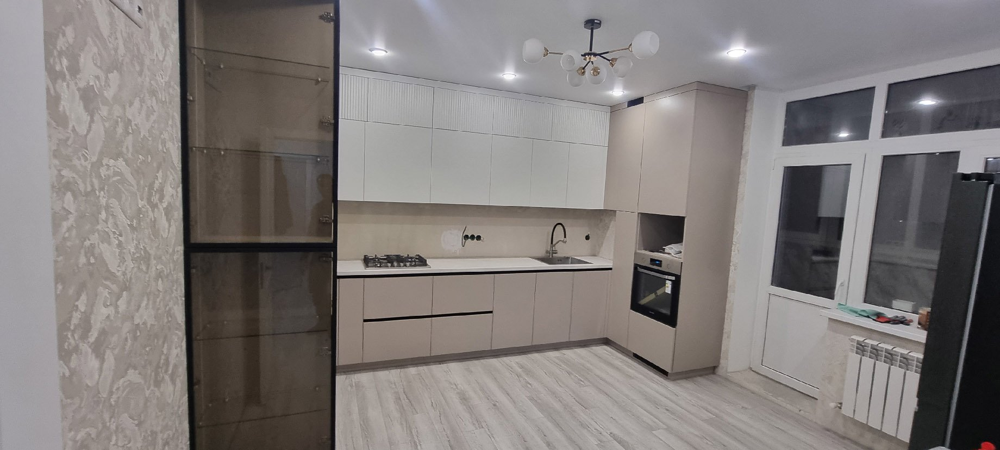

/ исходная страница 0377
Система одностеночных боковин: новое предложение от компании FGV
Компания FGV из Италии, предлагает качественно новую и оригинальную систему одностеночных боковин. Все ящики при желании можно оснастить механизмом плавного закрывания.
Открыть оригинал ↗
/ содержание
Компания FGV, один из ведущих производителей мебельных конструкций из Италии, предлагает качественно новую и оригинальную систему одностеночных боковин.
Теперь коллекция МДМ-Комплект пополнилась набором ящиков UNISET, которые отличаются высотой, длиной и цветом.
В ассортименте предложены боковины следующих размеров:
Все боковины представлены в двух цветах:
Система UNISET придаст кухонной мебели еще большую эргономичность и удобство. Все ящики при желании можно оснастить механизмом плавного закрывания. Все новые внутренние системы от компании FGV имеют сертификат качества CATAS, который гарантирует цикл на 80 тысяч открываний/закрываний.
Мебель на заказ для дома и офиса. Типовая и эксклюзивная, любые конфигурации и размеры. Современные материалы и комплектующие. Кухни, шкафы-купе, раздвижные перегородки, стенки и многое другое.
Разделы страницы
- Он-лайн конструктор
Навигация и пункты
- WhatsApp Max +7 (918) 510-69-99 +7 (863) 279-39-80 с 8:00 до 20:00 без выходных
- zakaz@malkomebel.ru
- Все кухни на заказ
- Кухни из массива дерева
- Кухни из шпона
- Кухни "Италия"
- Кухни МДФ c наборным фасадом (под дерево)
- Кухни "под потолок"
- Кухни из МДФ крашеного
- Кухни из МДФ пленочного
- Кухни МДФ-пластик
- Кухни - МДФ рамочный